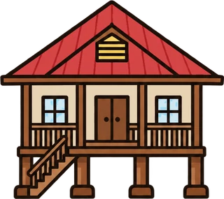
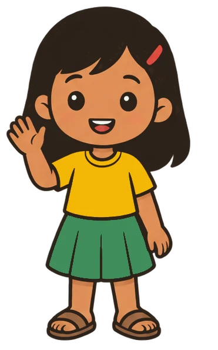
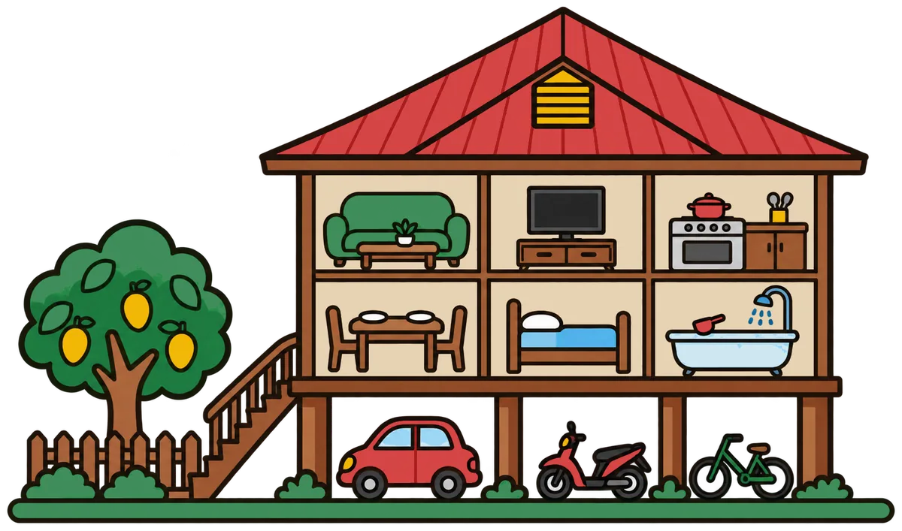

Halo, aku Bina!
Kelas 1 SDHari ini aku mau mengajak kamu masuk ke rumahku. Kita lihat sama-sama ruangannya, ya.
Menu
Pilih bagian yang mau kamu buka.Petunjuk Penggunaan
Capaian dan Tujuan Pembelajaran
Jelajahi rumah Bina
Ketuk setiap bagian rumah. 0 dari 8 sudah kamu buka.
Geser gambar ke samping untuk melihat seluruh rumah.
Ketuk salah satu ruangan
Bina akan menceritakan bagian rumahnya untukmu.
Rumah kita berbeda-beda
Ketuk setiap rumah untuk mengenalnya.Lihat rumah teman-temanku
Rumah mereka tidak sama dengan rumahku. Ketuk untuk tahu kenapa.
Bentuk rumah kita berbeda-beda. Semuanya tetap rumah. Semuanya bagian dari Indonesia.
Ayo bekerja sama
Ketuk satu pekerjaan, lalu ketuk siapa yang mengerjakannya.Masih ada 6 pekerjaan yang belum dibagi.
Aku menjaga rumahku
Ketuk semua perbuatan yang menjaga rumah dan lingkungannya.Pilih perbuatan yang baik. Kalau salah, coba lagi ya.
Rangkuman
Evaluasi
Soal 1 dari 5—
Kerja bagus!
0 / 5
Kamu sudah mengenal bagian rumah dan fungsinya.
Setiap rumah berbeda bentuknya. Rumah menjadi nyaman kalau kita mau bekerja sama dan menjaganya bersama-sama.